ЛАБОРАТОРНА РОБОТА №8
Тема: ІНТЕРФЕЙСИ ВЗАЄМОДІЇ WEB-ЗАСТОСУВАНЬ З СИСТЕМОЮ КЕРУВАННЯ БАЗ ДАНИХ (СКБД). SQL-ЗАПИТИ У PHP-СЦЕНАРІЯХ. ІНТЕРФЕЙСИ WEB-ЗАСТОСУВАНЬ з СКБД. ВИКОРИСТАННЯ СЕСІЙ І COOKIES В СЦЕНАРІЯХ АВТОРИЗАЦІЇ. РОЗРОБКА СЦЕНАРІЇВ ОБРОБКИ ДАНИХ З ФАЙЛІВ.
Мета: придбати практичні навички роботи взаємодії WEB- застосувань з СКБД, використання сесій і cookies в сценаріях авторизації, розробки сценаріїв обробки даних з файлів.
Створення інфологічної моделі
БД створюється для нашого електронного банку, щоб авторизований користувач(а саме співробітник банку) міг подивитися, які кредити мають клієнти. Адміністратор може здійснювати пошук по БД.
Спочатку створимо дві сутності: клієнти та тип кредиту, який беруть клієнти. Вони будуть поєднуватися зв'язком "Кредити".
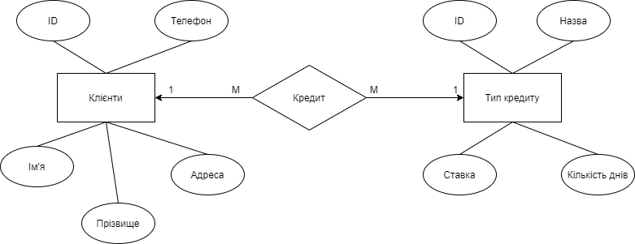Вже на цьому періоді створення БД було враховано цілісність - обидві сутності мають ID - унікальний ідентифікатор кожного екземпляра сутностей.
Створення даталогічної моделі
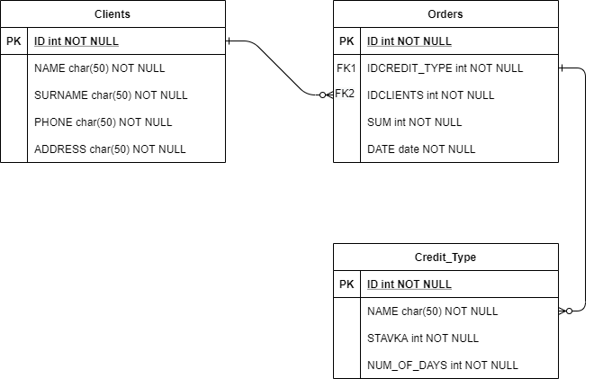Нормалізацію бд виконано. Усі зв'язки у базі даних 1:М. У кожної таблиці є свій первинний ключ(РК), таблиця Кредитів має два вторинних ключі.
SQL-запити до БД
Даталогічна модель, яка використовувалась у подальшому
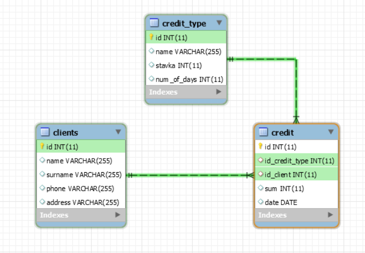Створення БД у СУБД MySQL(працювали у середовищі MySQL Workbench)
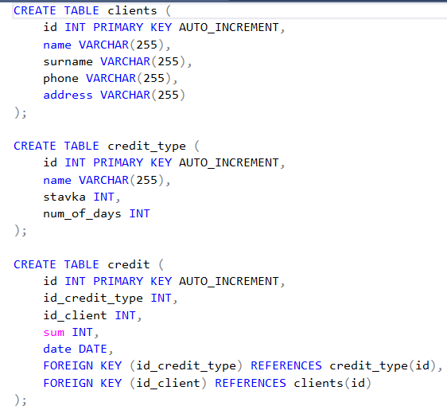Зовнішній вигляд сторінки уже з підключенною БД
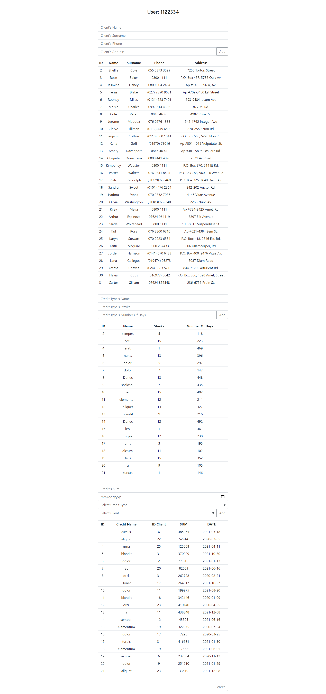Маємо вже внесені дані до усіх трьох таблиць та можемо переглянути їх. Також над кожною таблицею ми маємо поля для вводу даних, щоб здійснювати пошук по екземплярам сутностям.
PHP-файл зі скриптами підключення БД та створення SQL-запитів до БД
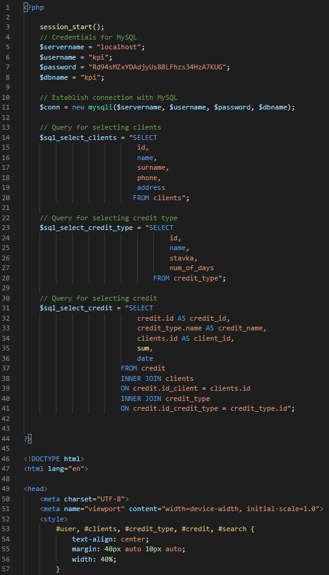 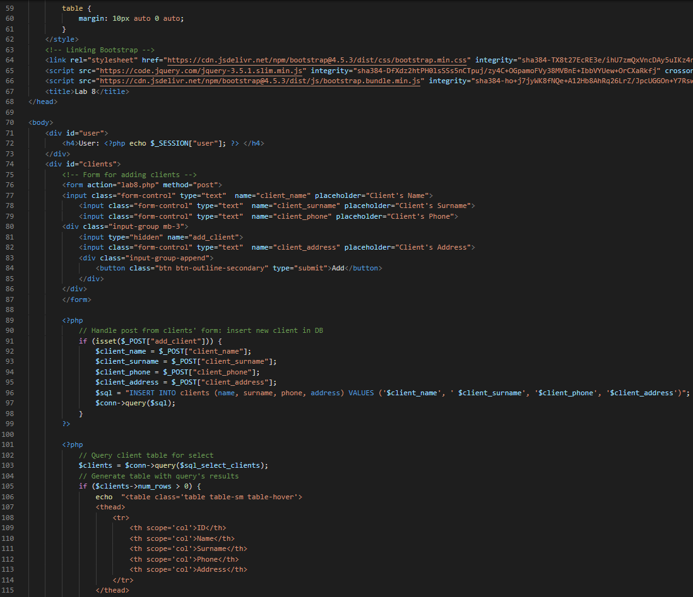 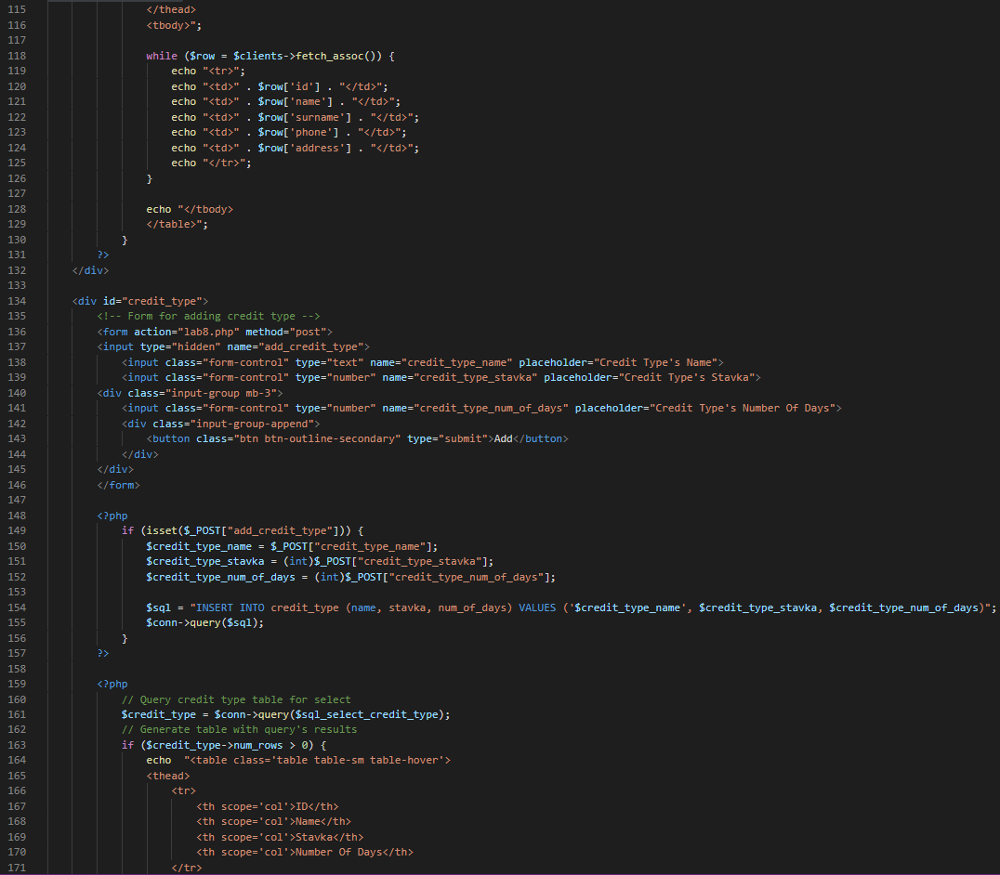 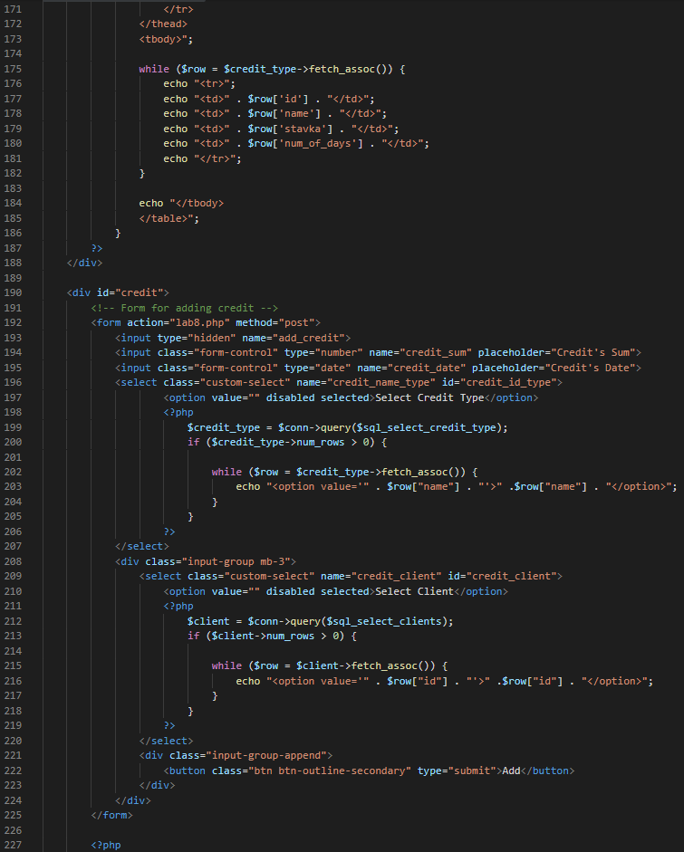 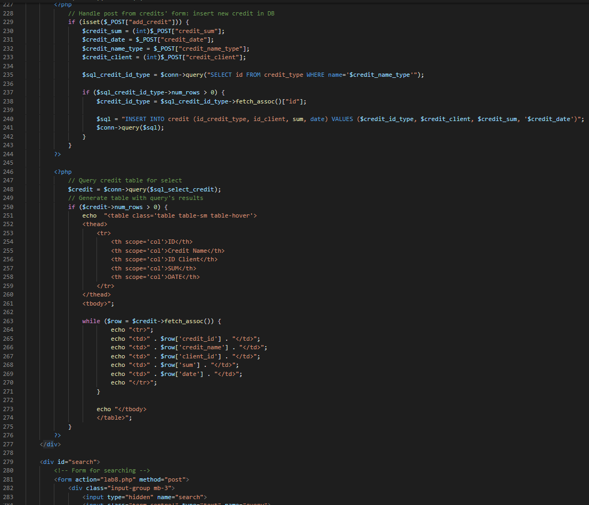 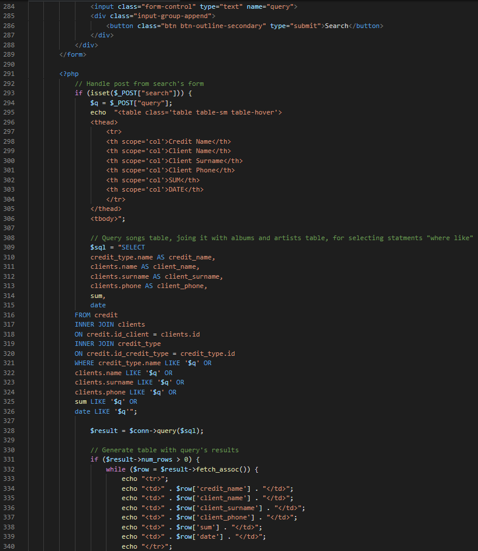 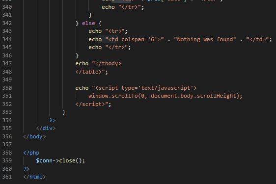Авторизація
У цій лабораторній роботі ми зробили авторизацію не для клієнтів банку(це можна буде реалізувати потім), а авторизацію для співробітників банку, щоб вони мали доступ до створенної нами БД з переліком усіх клієнтів банку та кредитами, які вони мають. Тому авторизований співробітник може передивитися інформацію та здійснити пошук по ній.
Зовнішній вигляд сторінки з авторизацією

Функція, яка виконує авторизацію
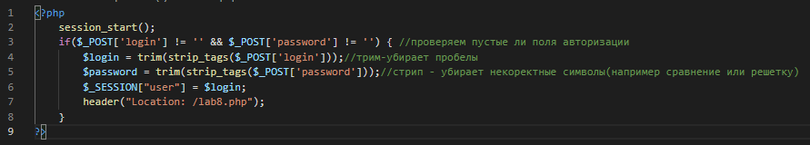Скрипт сторінки із входом
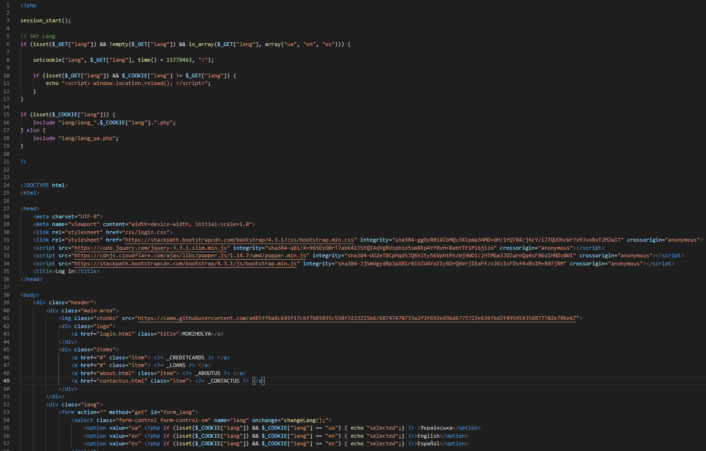 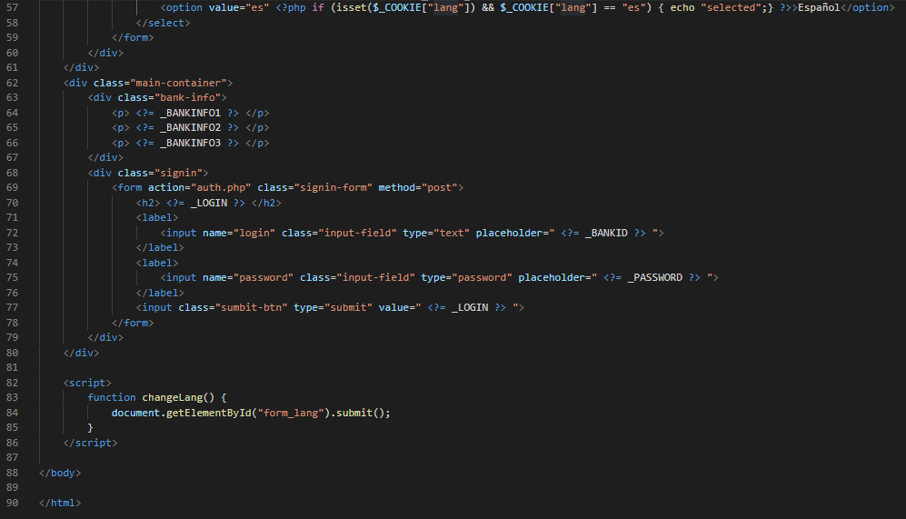Вибір мов
Ми зробили здатність користувача переключатися між трьома мовами: Українською, Англійською та Іспанською. Ось як виглядають сторінки, якщо переключати між мовами:
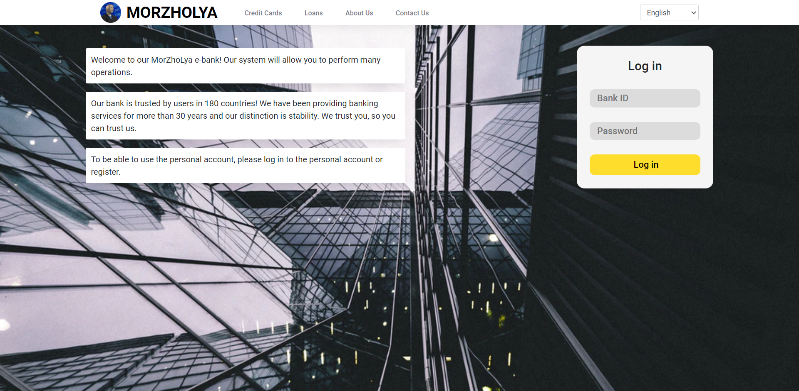 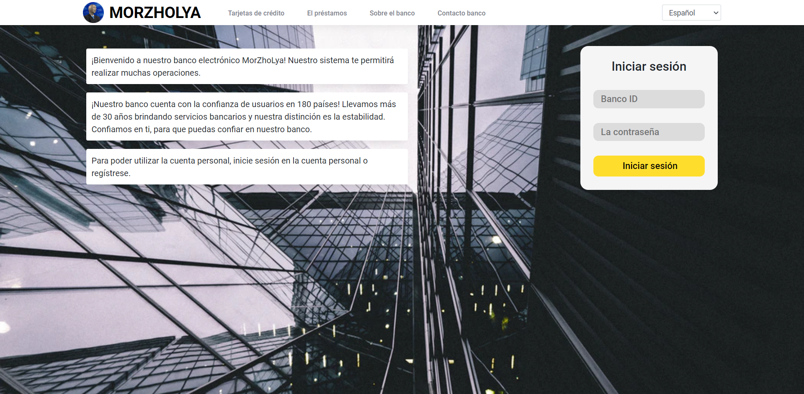Ось як реалізований сам вибір мов графічно
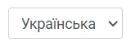Реалізація вибору мов у скриптах:
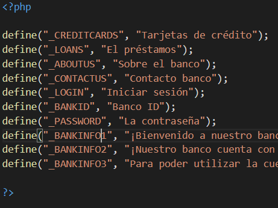 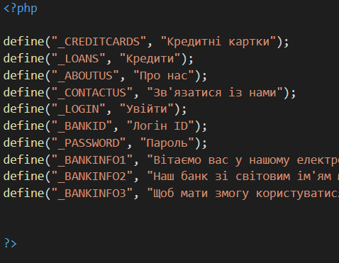 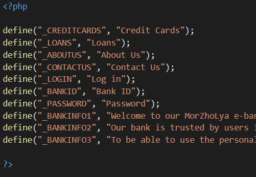 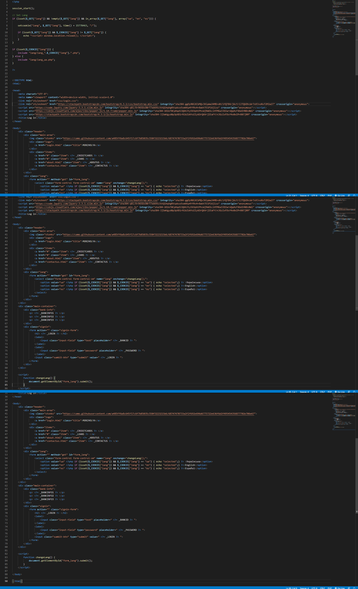Висновки
У цій лабораторній роботі ми розробили БД під тему нашого сайту, а саме електронного банку. Ми розробили інфологічну та даталогічну модель нашої БД. Потім ми реалізували БД в СУБД MySQL, написали скрипти PHP для внесення даних до БД, виведення їх на екран та пошуку. Також ми виконали авторизацію співробітника банку та додали можливість вибору мов.